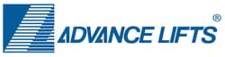

Lift Equipment Built for Millions of Cycles, Not Just Years of Service
Dock lifts, scissor lift tables, mezzanine access lifts, tilters, container dumpers, and turntables—sourced through our partnership with Advance Lifts and matched to the loads, cycle rates, and floor plans your operation actually runs.
Manual Lifting and Fixed-Height Docks Slow Everything Down
Loading at the wrong height, moving product between mezzanine levels by hand, or tipping and rotating containers manually all cost time and invite injuries—lift equipment removes that friction at the exact point it happens.
Twin Pick Racks partners with Advance Lifts to spec dock lifts, scissor lift tables, and mezzanine access lifts built for high-cycle industrial duty rather than light commercial use. Their tilters, upenders, container dumpers, and turntables handle the awkward material-handling moves that don't fit neatly into racking or conveyor—rotating, dumping, and repositioning loads so your team isn't doing it by hand.
What We Evaluate
- Load capacity, platform size, and daily cycle count
- Pit-mounted vs. portable, and available floor or dock space
- Travel height needed between levels, docks, or mezzanines
- Duty cycle and warranty class for high-volume operations
- Integration with existing dock equipment and mezzanine access
- Power, hydraulic, and maintenance access requirements
Browse the Full Advance Lifts Line
Twin Pick Racks partners with Advance Lifts for dock lifts, scissor lift tables, mezzanine access lifts, industrial turntables, tilters & upenders, container dumpers, work access lifts, and electric lifts. Explore their complete catalog below—then talk to us about matching it to your operation.


From Lift Assessment to Installed Equipment
Lift equipment runs thousands of cycles a year in most facilities, so every project starts with real data on load, cycle rate, and dock or floor layout—not a generic unit.
Assess
Study load weights, cycle counts, travel heights, and site conditions to size the right lift for the job.
Design
Match dock lifts, scissor tables, tilters, dumpers, or turntables to your process and plan for pit, power, and access needs.
Implement
Coordinate delivery and installation with Advance Lifts, with testing before the unit carries live loads.
Ready to Put Advanced Lifts to Work?
Sizing a dock lift for a new bay, adding mezzanine access, or looking for a better way to tip and rotate containers—we'll help you find equipment built around your operation.